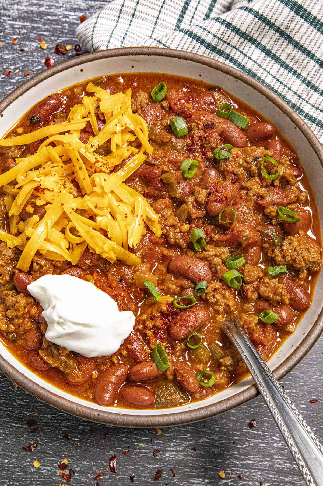

Chili

About
We're cooking up a big pot of comforting homemade chili in the Chili Pepper Madness kitchen today, my friends. You're going to love it. It's loaded up with ground beef, fire roasted tomatoes, lots of chilies, and beans.
This particular chili recipe is a ground beef chili very much like you'll find all around America in kitchens and restaurants. It's sort of a prototypical bowl of chili with beans, very easy for you to make and also customize to your own preference.
Ingredients
- 1 lb 80% lean ground beef
- 1 lb ground turkey
- 1 cup diced onion
- 1 cup bell pepper, diced
- 1 shallot, diced
- 8 garlic cloves, diced
- 1 tablespoons chili powder
- 1 teaspoon cumin
- 1 teaspoon coriander
- 1 teaspoon salt
- 1 (28 ounce) can diced tomatoes
- 1 (12 ounce) can tomato paste
- 2 (14 ounce) cans red kidney beans
- 1 sour cream
- 1 shredded cheese
- 2 avocados
- cornbread mix
Instructions
- Strain beans in a colander
- Brown beef and pork in large skillet and use spatula/wooden spoon to break the meat into very small pieces as it cooks.
- When meat is browned, toss in onions, peppers, shallot, garlic and spices and cook until onions are translucent.
- Transfer meat/veggie mixture to crock pot and add in the tomatoes, tomato paste and beans.
- Stir to incorporate all ingredients, and cook on low for 6-8 hours.
- Follow the instructions on the cornbread mix box and start preparing it when the chili has about 1h left in the slow cooker.
- Serve with tortilla chips, shredded cheese, cilantro and sour cream.